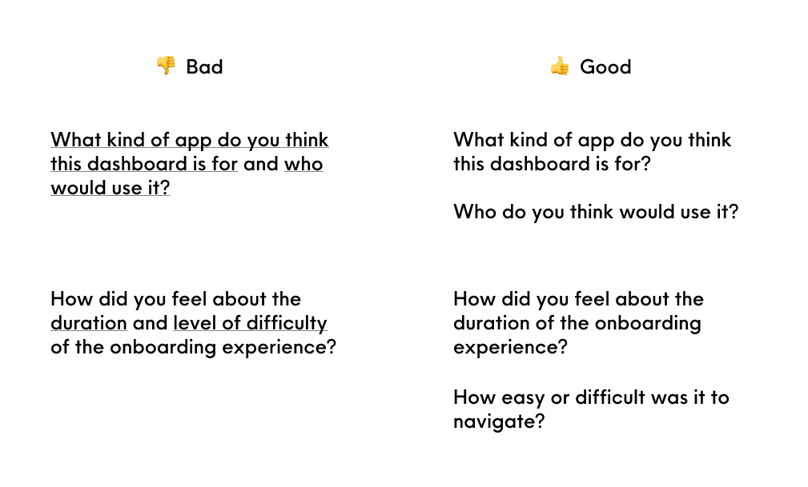
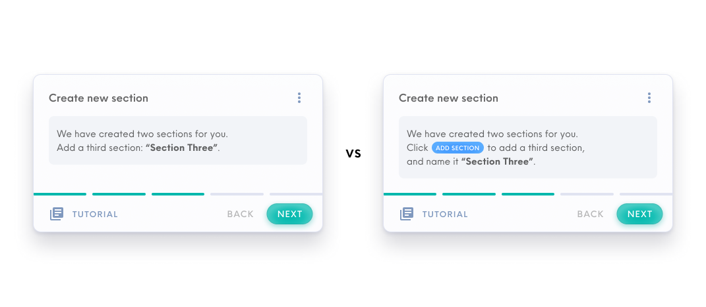
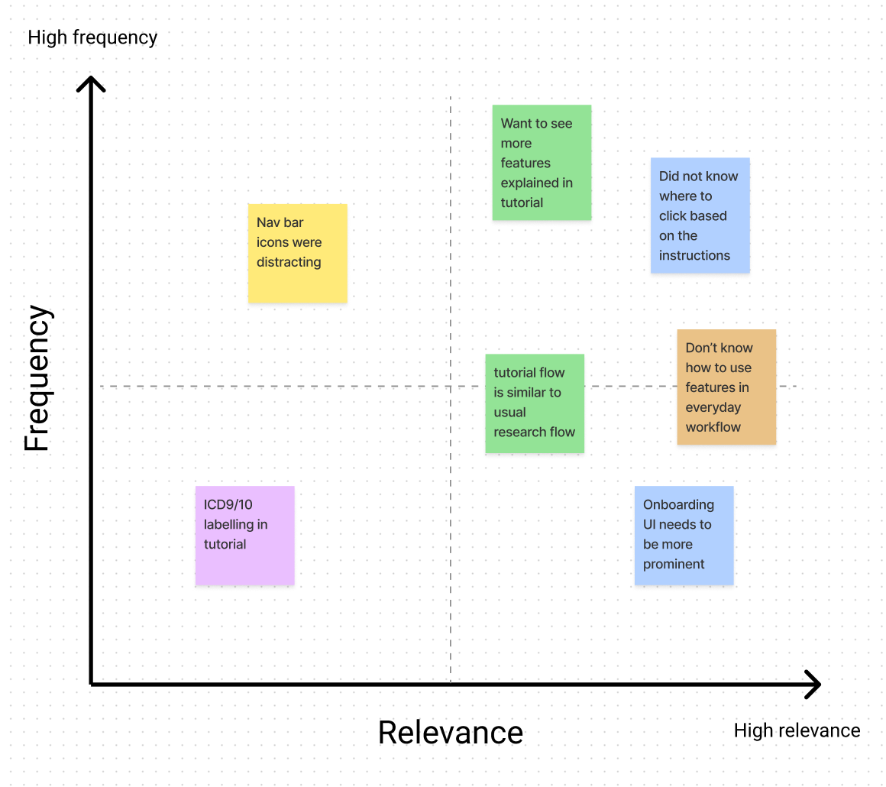

When it comes to designing a product, user research can be the most vital tool to validate design decisions and product features in relation to how much they meet the needs of our target users. You may find a more in-depth introduction to user research here.
Talking to potential users and getting their input when conducting user research can be an exciting and insightful process. However, it can also be overwhelming to the team conducting the research, where there is a growing amount of both qualitative and quantitative data. Hence, this blog post aims to cover some step-by-step methods of analysis that allow us to effectively obtain relevant and actionable insights from user research data.
01 Testing the test
It may be common for us to think that research analysis should be done after an iteration of user research where a considerable amount of user research data has been collected. However, there is one method of analysis that should occur before conducting extensive user research which is called a ‘pilot test’.
The objective of this analysis is to evaluate the effectiveness of our existing test flow and test questions, as well as how to improve them, by conducting a dry-run of the test with one user.
Steps:
- Run the test sequence with your selected dry-run user - treat them as your first interviewee
- Analyse how they respond to your questions:
- Is there any confusion?
- Are they answering in the way you planned?
- Are the instructions given easy to understand?
- Any areas where they need more guidance?
- Modify your test based on the insights from the above step, such as:
- Improving the language used in your questions
- Improving the flow of your prototype (if applicable)
- Adding more questions to target your research objectives
- Rearranging the questions or the flow of the test itself
- Preparing extra materials that might be useful to the research and/or users
For example, this exercise can uncover questions that are too complicated for users to answer effectively, such as double-barreled questions that contain two prompts for the user to answer. As a result, users may miss out the second prompt of the question, or answer with points mainly targeting the first prompt, leading to misleading research results. An example of how to improve such questions is shown below.

An example of how to improve double-barreled questions
This ‘pilot test’ is very important and can be pivotal to the outcome of your research study, especially for the test facillitators. From the test run, they could become more confident in avoiding leading questions that could invalidate user response, and also get a better sense of the average time taken to complete a test session. Hence, by using this method to fine-tune our research study, we can achieve insights that are more relevant to our research objectives and prevent scenarios where test sessions did not go as planned.
02 During a test session
It is important for researchers to observe participants beyond their literal verbal or written answers to test prompts/questions. In fact, there are many other forms of data that can be analysed, both intangible (soft data) and tangible (hard data), for us to draw insights from as explained in the table below.
A table of soft and hard data that can be analysed to increase level of analysis in user research
| Type of Data | Data captured | What to look out for |
|---|---|---|
| Soft Data | Emotion | User’s tone of voice, language/adjectives used |
| Body language | Analyse their facial expressions, body movements. (e.g. are they scratching their heads in confusion?) | |
| User actions | What clicks did they make to reach a certain section? What other things caught their interest (e.g. did they mouse over something else) and why? You can also convert this to hard data via Heatmaps! | |
| Hard Data | Time-to-completion | How long did they take to complete a certain task? How many clicks/steps did they take? |
| Word-frequency analysis | What are some descriptors/adjectives that they used to describe a process or answer your questions? P.S. Keep a log of these words to compare against other test participants. | |
| Ratings | If you had asked them to rate on a scale of 1-5, what were their answers? Do you think the ratings correlate to their performance in the tests? | |
| Heatmaps (data visualization showing how users click, scroll, and navigate the screen) | What are the most common areas users hover over or click on? Where do mis-clicks occur the most? |
Being able to capture the types of data explained above can significantly add to the depth and level of analysis of your research. In the case of soft data, it is even more so important to understand the underlying user intentions by probing further in a precise, yet unintentional manner to avoid any assumptions in analysis. Oftentimes, this is easier if test participants are comfortable to speak or think out loud during the test. Thus, as the researcher, we should explain to users that there are no right or wrong answers during the test, allowing them to speak freely and give insights accurate to their experiences.
03 After each test session
While we may be eager to squeeze as many test sessions as possible on our calendar, we should also leave ample buffer time between sessions to perform a brief analysis after each user interview. The team can take a short break to think calmly and critically about the discussion points before coming together for analysis. Discussing findings with each other shortly after a session can highlight different insights and observations that were not picked up by others, instead of homogenised insights.
At the same time, it would be helpful to keep a log of patterns or trends that occur within the research tests, such as:
- Was this same point/response to a question mentioned by a previous test participant?
- Did the test participants similarly struggle at a particular section of the test?
For example, when conducting research on an onboarding process, we observed a trend that users consistently found a section of the onboarding confusing and rated their confidence level of it poorly. As shown in the image below, some of us thought of shortening the instruction copy further to make it simpler for users, while others had the idea of adding button icons into the instructions. The latter approach proved to be more effective after implementing it in subsequent user tests.

Adding button icons (right) to onboarding instructions proved more effective than shortening instruction copy (left)
With a more holistic perspective on how the test session went, the research team can then log the consolidated research notes for that session, highlighting these key insights. Some useful resources used by us at Holmusk are:
- Notion (general collaborative note-taking and organising of research information)
- UserTesting.com (consolidates research notes for you when conducting unmoderated interviews on the platform - also has a cool smart-tag function that recognises user emotion!)
- Record your user test sessions! (you can revisit the recordings to make sure nothing was left out in your research notes)
04 After one research iteration
Research iterations are ways for you to continually improve your test based on your current findings. For example, we could define one research iteration to be five user tests. Thus, after conducting five tests, we can gather all research notes that were consolidated and perform another round of analysis:
Rank and organise research notes according to the frequency which comments were made by test participants, as well as according to the relevance (extent which it directly addresses/relates back to the research objective) of their insights. The chart below shows a mental model of how data from user tests can be sorted.

An example of how to rank and organise research notes
The most commonly occurring comments can indicate high-priority polishes/fixes for researchers to implement for the next iteration, while high relevance insights can trigger more critical thinking in researchers regarding the research objective.
Thus, we can incorporate the main insights (top right quadrant in the graph above) via making changes to the test flow or prototype for the next iteration of user tests. It would be ideal to have new participants for the next iteration to prevent biases in their responses.
05 Consolidating insights
Finally, when we’ve completed the desired amount of research for our study, it’s time to report our findings to relevant stakeholders.
Here are 3 key tips to delivering your insights:
- Always relate back to the research objective - Why did you conduct the study and how does it affect the product?
- Convert insights to actionables
- Some insights that relate to users’ dissatisfaction or suggestions can be reported as action items to improve a specific part of the product
- Review the feasibility of these actionables with respect to the production timeline
- Categorise actionables as current/possible improvements to be discussed and reviewed, vs future/potential ideas that can be logged and explored later in the timeline
- Understand your stakeholders - who are you reporting the research to?
- What are they expecting out of your research?
- What is the level of detail you want to achieve? (e.g. high-level information vs technical details)
- Prioritise information that relates to your stakeholders (it’s even better if you keep this in mind throughout the entire research process!)
As they say, UX research is an ever-changing process, thus, all the more should we adapt it to improving our research analysis workflow. In fact, there are many more methodologies than the user test covered in this blogpost, which can used for different research goals. There’s so much more we can uncover beyond singular verbal and written feedback. These methods of analysis allow us to discover patterns and trends - as though we’re slowly uncovering the blueprint to spark joy in our users and enable them to make real-world impact with our product.